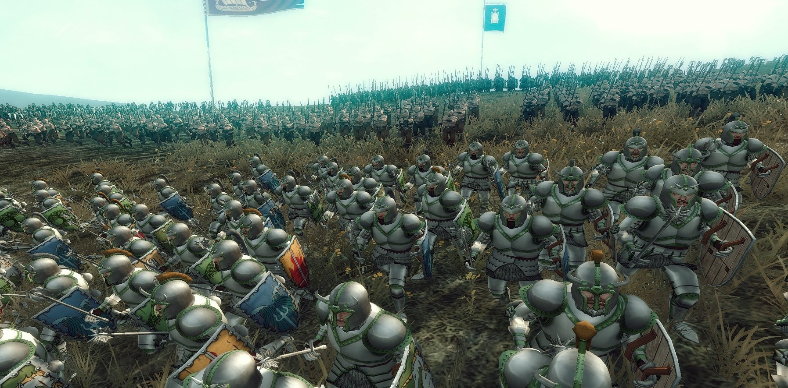

Exploitation de la base de données « nutriscore » :
A partir d’une base de données disponible en opendata, réalisation d’une étude contenant des graphiques appropriés pour répondre à une question, précise et rédigée en anglais, permettant d’établir le lien entre le nutriscore et les variables nutritionnelles pour les produits de la famille ‘en : dressings-and- sauces’ aux Etats-Unis.

Application de gestion d’événements :
Conception et développement d’un outil d’aide et de pilotage à destination d’organisateurs d’événements. Cette application est développée par une équipe de 5 étudiants (à peu près 100 heures de travail / étudiant-e) et elle est composée de plusieurs parties : conception, IHM, graphes, méthodes numériques et gestion de projet.
Mini-jeu « La bataille de Faërun » :
Développement d’une application, en Java, sous forme d’un jeu. La réalisation de ce jeu consiste à simuler la bataille des guerriers entre deux châteaux différents.
